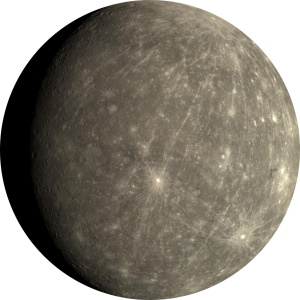
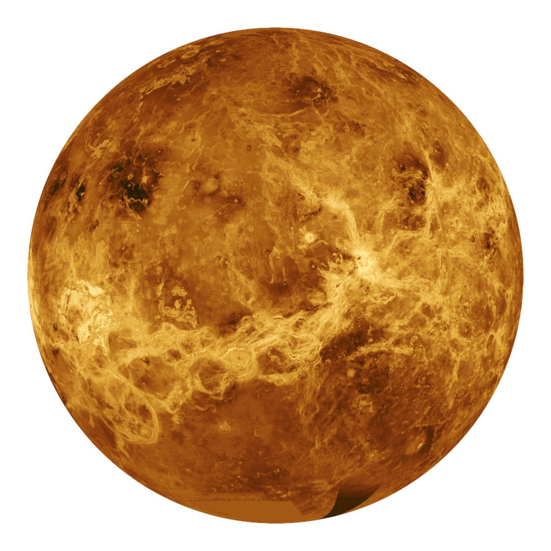
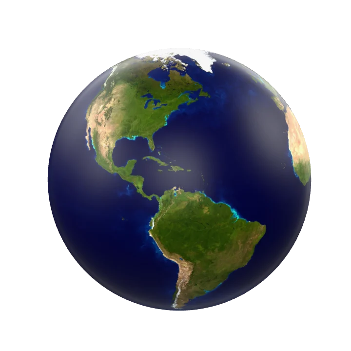
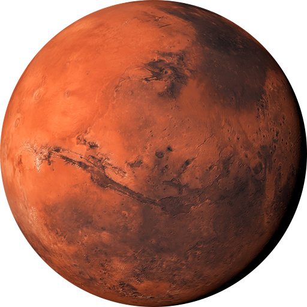
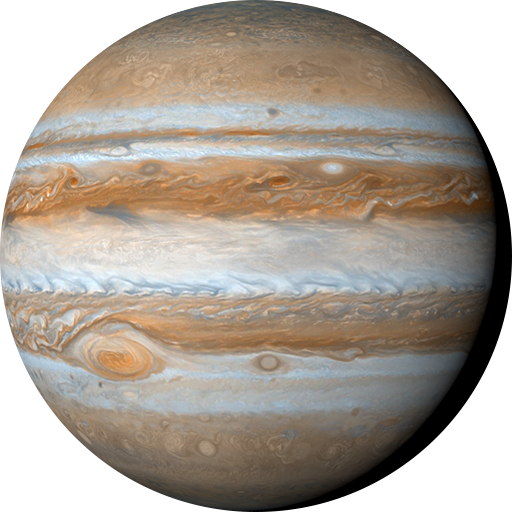
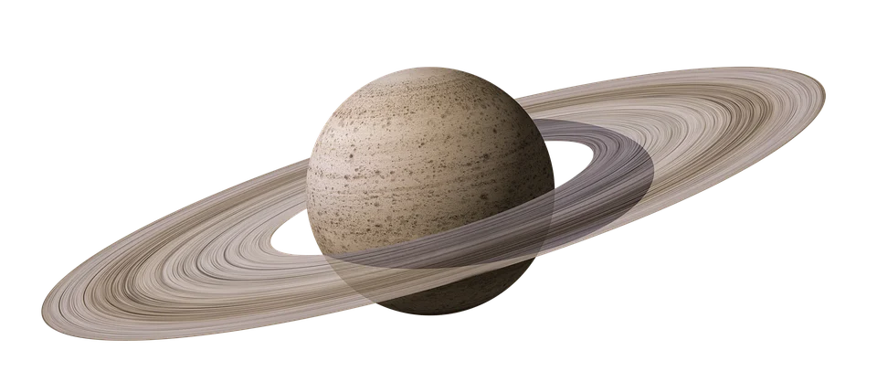
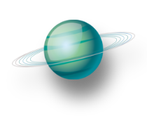
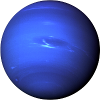

Fedezd fel a Világűrt!








3 Érdekesség
A leghidegebb hely
A Világűrben a Boomerang-köd a leghidegebb ismert hely, ahol -272°C van.
A legnagyobb vulkán
A Marson lévő Olympus Mons 22 km magas, háromszor akkora, mint a Mount Everest.
A leghosszabb misszió
A Voyager-1 űrszonda 1977-ben indult, és még mindig küldi az adatokat.